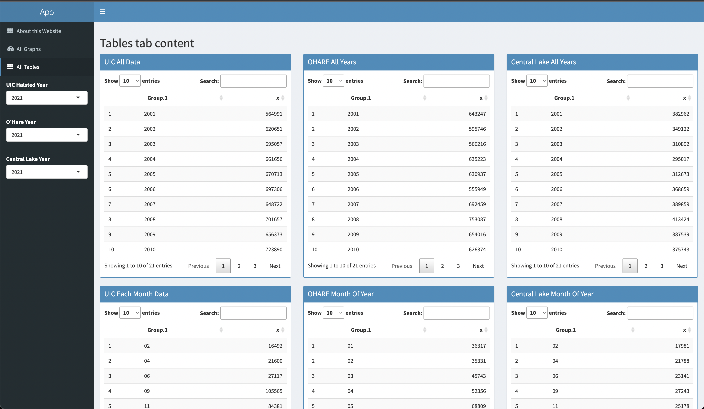
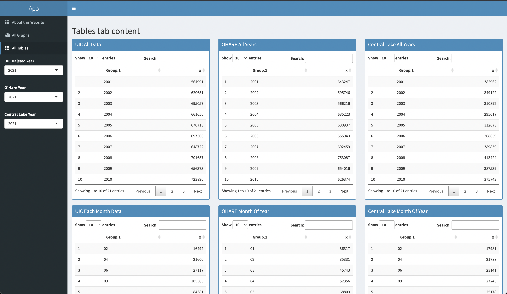

Project 1
Description
Link to an application ThreeStationsAPP, Link to the code
 

Two main pages on the application website: Graphs and Tables
Introduction
- Interface.
- Data
- Graphs & Tables
- All years
- Each month
- Each day
- Each Weekday
- All days
When you visit the application website the interface is pretty intuitive.
App main window is divided into two parts: Menu (Controls and Pages), Currently Displayed Data.
There are three selectors available in the Menu part: three years to select for specific stations' rides.
Similarly, there are 3 pages available: About page, Tables page and the initial Graphs page.
The data that is being initially displayed when a user visits a website is being selected from 2021 year
and the data is about rides of 3 particular stations. In our case the stations are O'Hare, UIC-Halsted and Central Lake.
All Data is being divided in Graphs and Tables.
There are total 5 different Graphs and Tables that represent the state of data at their specific range of time.
Explanation Video
Data & Manipulations
- Where was it taken?
- Manipulations.
- Tables Data representation
- Graphs Data representation
All data you see is taken from Chicago Data Portal Here
Given Dataset consisted of different stations across Chicago and their number of rides along with their date and time.
The manipulations to Data that I did was converting the full date into three different columns and adding
those columns to initial dataframe because it only consisted of string type value for dates and not separate D/M/Y format columns.
The other manipulation was to filter out specific data for three stations each from 2021 year.
Another one was to get weekdays names because they were not intially present in the given data.
In order to display data using Tables I took the specidfic sum of values from rides columns filtered by specific year.
This allowed me to get the needed data for each type of graph that you see on the website.
Similarly, for each graph I actually did not do any manipulations because the R language deals with the selected displaying data itself.
In order for it to show the correct data, I just selected the needed columns for the axis x, y which resulted in correct graphs.
Interesting Insights from Data.
- Rides during COVID-19 start?
If you look closely at all years data for UIC-Halsted staion (which is the first column) you will see the significant drop in 2020.
Same tendency can be seen for the other stations.
However, O'Hare station stats did not really change as we can see that the number of rides did not variate from the previous months.